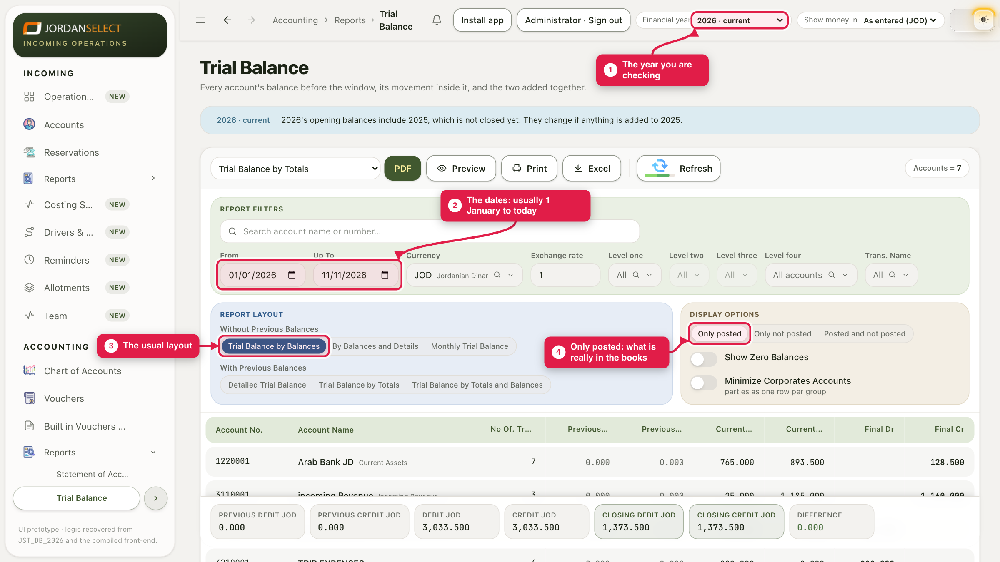
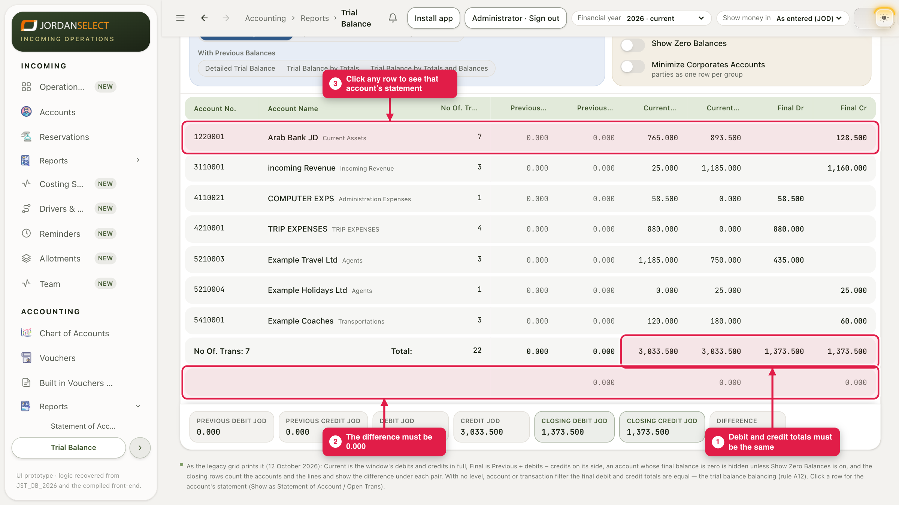

One page with every account’s balance. Check that debits equal credits, at the end of every month.
WhoAccountants
WhereAccounting → Reports → Trial Balance
Takes2 minutes
You needNothing
1. Open it and set the dates
1
Open Accounting → Reports → Trial Balance. Check the Financial year in the top bar is the year you are checking: the dates cannot go outside it. Set From and Up To: usually 1 January to today, or to the last day of the month you are checking. Keep the layout Trial Balance by Balances and keep Only posted.

The blue strip under the title says which year you are in, and whether it carries in an earlier year that is not closed yet (guide 11).
2. Check the totals
2
Look at the Total row at the bottom. The two Current columns must be the same, and so must Final Dr and Final Cr. The row under it shows the difference, which must be 0.000.

Balanced: 3,008.500 each side, difference 0.000. Click any row to open that account’s statement.
The totals are not equalFirst clear any filter: Level one to four, the search box and Trans. Name. A filter shows only part of the books, so it will not balance. If it still does not balance with no filter, stop and tell the finance manager.
3. What to look at each month
The banks: compare each bank account with the bank statement.
Agents: a large Final Dr means money to chase (guide 08).
Suppliers: compare with Inbox → To pay.
Show Zero Balances lists accounts that are at zero too, if you need to see them.
Print and Excel at the top keep a copy for the month’s file.
Questions? Ask the finance manager. · Last checked: 11 Nov 2026 · Screens shown are from a test copy of the CRM with made-up data.